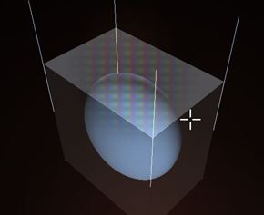
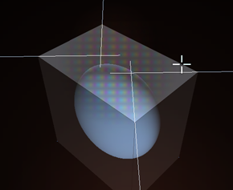

|
By clicking outside the arcs but still inside the outer circle
you activate the scale function. The scale is by default in
3 dimensions but by drawing along one of the three axises you
can limit it to one axis. Right Button snapping works here as
well, and it snaps to the outer edge of the selection. This
is very useful when you want to scale a selection to fit in
side a room.
On the right side you of the manipulator you will find two
handles, they are used to move the normal and the tangent direction
of the surface.
|
The lower one moves the selections in the normal direction, this means in and
out. The normals are computed by averaging the surrounding polygons
normals for creating a correct normal. If a vertex is used by one
of more selected polygons its normal will not be influenced by
any polygons that are not selected.

|
The top handle is the tangent handle. It allows you to move
the outer edge of your selection in and out in the tangent plane.
Notice how all outer edges move at the same distance. Tangent
and Normal Transform in conjunction with extrudes is a very
power full tool for solving a number of technical modeling problems.

|